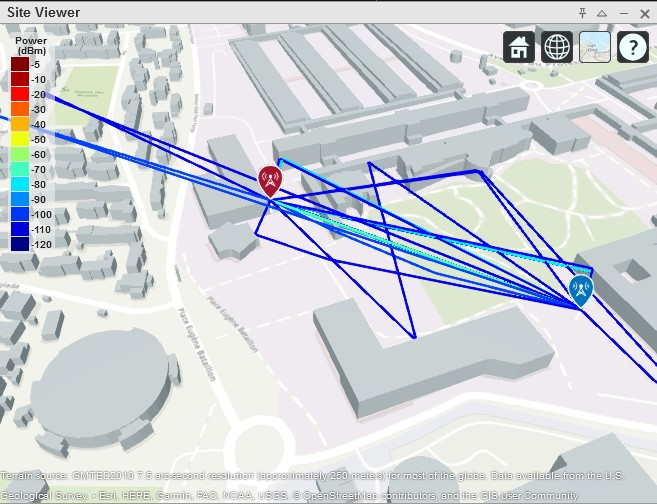
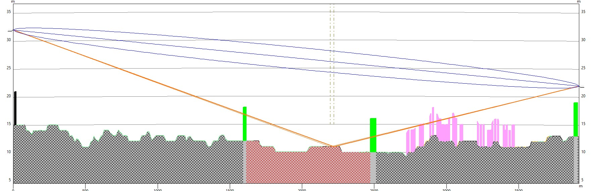
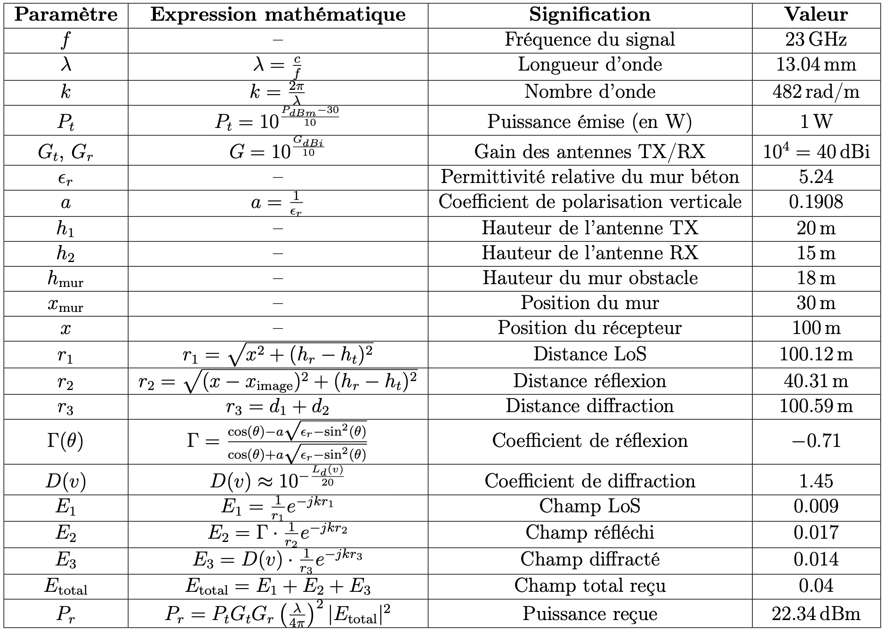

01
Modélisation Ray Tracing 3D
Propagation Radio en Milieu Urbain
Ingénieur Modélisation RF
Modélisation des phénomènes de propagation en milieu urbain dense sous MATLAB. Analyse Ray Tracing 3D à 23 GHz avec calcul d'atténuation et optimisation d'implantation d'antennes.
Environnement
Urbain dense
Fréquence
23 GHz
KPI
Zones d'ombre anticipées
Précision
LoS + multi-trajets
MATLAB
Ray Tracing 3D
Propagation EM
Python
02/2025 - 08/2025


